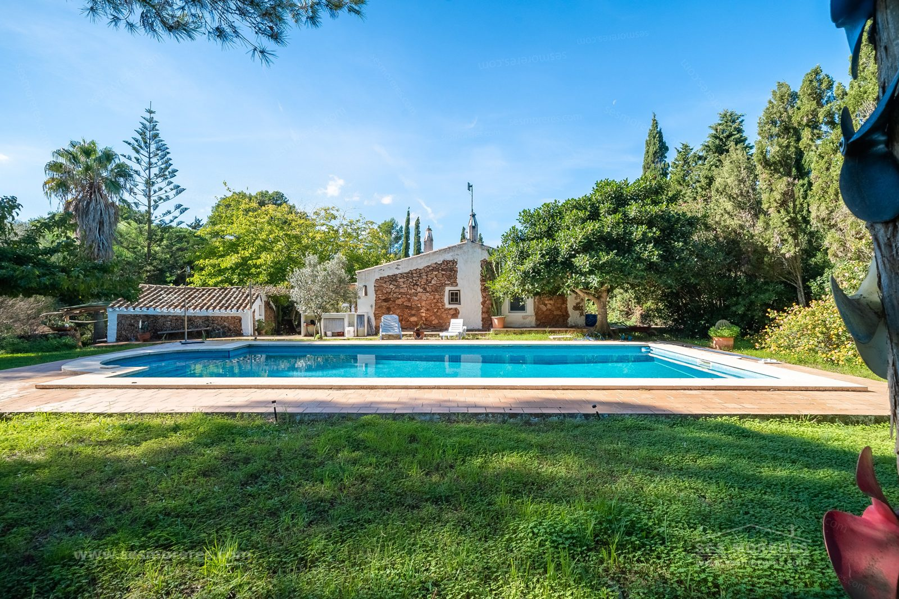

€1.150.000
Sierra Morena, Mahón, Menorca, Spain
Open the listingRestored exposed-stone house in about a hectare of woodland, with a large private pool, solarium, BBQ, and a stone guest cottage. Old threshing floor kept.
Asking €1.150.000. Near the Menorca price cap. Rural-nucleus rules for any extension.